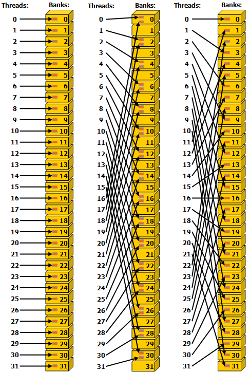
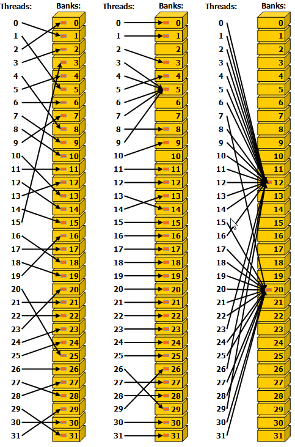
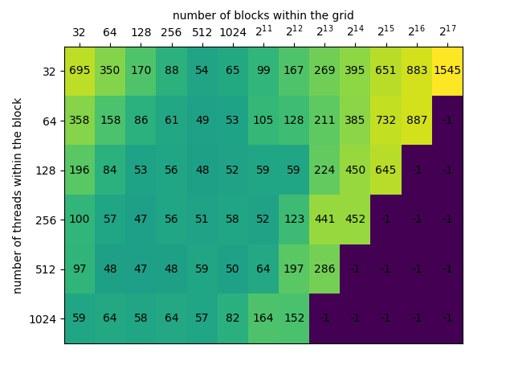

Parallel Reduction
参考nvidia: optimizing parallel reduction in CUDA
优化的核心问题
-
Parallel reduction优化的核心之一是减小同一个warp内部的线程差异化，因此在kernel初始化时或在global memory初始化时就应将数据补齐至2的次幂且大于等于32（补0或其他相应值），在计算过程中尽量避免可能在一个warp内导致不同走向的三元操作符和条件判断生效，所有操作尽量以32个连续threads作为最小单位。
-
shared memory的初始化（extern关键字，传入gridSize, blockSize和sizeof(var)*smemSize）： 若动态声明shared memory，初始化时检查越界 (以下代码未检查越界)
sdata[tid] = g_idata[i];sdata[tid] = g_idata[i]+g_idata[i+blockDim.x];可能出现越界sdata[tid] = (i < n)?g_idata[i]:0;if (i + blockSize < n) sdata[tid] += g_idata[i + blockSize];会将越界后的置为0
-
以下代码应用时应补全边界检查部分。
优化1与2：减小warp内部线程间的差异，替换求余”%“运算符
-
Reduction 1： 通过判断thread ID是否是2的指数的整数倍，选择是否进行运算 在一个warp内，整个程序的执行过程中始终有部分thread执行if条件，部分执行else条件（从indexing的角度，间隔若干个，有一个工作），即divergent warps
-
Reduction 2： 通过在indexing时将其赋值为2的指数，跳过了剩余的theads，需判断index是否越界 在indexing靠前的warp内部，threads始终执行if分支，排在后面的warps/threads会随着迭代依次执行else条件
-
Highly divergent warps are very inefficient, and % operator is very slow
- 注意图中线程的编号
| Reduction 1 | Reduction 2 |
|---|---|
| ![[learning_note/1.theory/0.algorithm_basic/parallel_computing/zz.attachment/reduction1.png | 600]] |
__global__ void reduce0(int* g_odata, int* g_idata, int n)
{
extern __shared__ int sdata[];
|
__global__ void reduce1(int* g_odata, int* g_idata, int n)
{
extern __shared__ int sdata[];
|
优化3：shared memory bank冲突
-
Shared memory以4byte (32bit)为一个bank，共32个bank（与warp内thread数对应），程序需经过bank再找到具体内存地址。若一个warp内有多个线程同时访问同一个bank的数据就会产生shared memory bank conflicts 同一个warp内线性寻址或者broadcast可以避免或减少此问题（实现起来也就是在kernel中线性寻址），间隔寻址（如reduction1/2）或者随机寻址可能会造成shared memory bank conflict
-
通过Bank寻址可以下图为例，Ref: What is a bank conflict? (Doing Cuda/OpenCL programming)
Bank 1 2 3 … Address 00 01 02 03 04 05 06 07 08 09 10 11 … Address 64 65 66 67 68 69 70 71 72 73 74 75 … … -
Sequential addressing is conflict free
避免一个warp内的threads同时访问临近bank（shared memory）
-
CUDA toolkit documentation中的配图Ref:I.4.3. Shared Memory
| 左、右无冲突，中间不同thread访问bank中不同数据，有冲突 | 不同thread访问bank中相同数据，左、中、右均无冲突 |
|---|---|
|  |  |
| Reduction 2 | Reduction 3 |
|---|---|
| ![[learning_note/1.theory/0.algorithm_basic/parallel_computing/zz.attachment/reduction2.png | 600]] |
__global__ void reduce1(int* g_odata, int* g_idata, int n)
{
extern __shared__ int sdata[];
|
__global__ void reduce2(int* g_odata, int* g_idata, int n)
{
extern __shared__ int sdata[];
|
优化4：初始化赋值时完成一次加法
- 注意！：此时除了kernel函数需要修改，在启动kernel时传入的gridDim也需要进行相应的修改 因为在初始化时进行了一轮求和运算，因此block数可以减半，每个block内的threads数保持不变（即不需要改变循环中的初值s=blockDim.x/2） 例如：若同样启动512个threads，Reduction 1～3一个block只能用来计算512个数字之和，在第一个iteration之后停掉其中的一半，即有一半的thread只被用来初始化shared memory，从来没有用来计算。Reduction 4在初始化时每个thread先完成一次计算，即完成了1024->512，随后过程与Reduction 3一样，每次对半停掉thread。
| Reduction 3 | Reduction 4 |
|---|---|
__global__ void reduce2(int* g_odata, int* g_idata, int n)
{
extern __shared__ int sdata[];
|
__global__ void reduce3(int* g_odata, int* g_idata, int n)
{
extern __shared__ int sdata[];
|
优化5：部分循环展开
- 计算的流程前半部分是一样的，当剩余需要计算的threads小于等于32个时，接下来的此时运算将集中在第一个warp中，序号为0~31的thread。为了避免这个warp内线程的差异化，将循环实现的折半求和运算展开为一个线程内的顺序（sequential）运算
- warpReduce中的每一步对于这个warp中的每一个thread都是同步的，不需要额外的
__syncthreads()。对于第一个warp省去了for循环中的位移，判断，及循环内部的同步。剩下的warp都将停止在if (tid < 32) - 注意保留device代码的volatile！编译时device代码将直接在kernel内部替换展开。
| Reduction 4 | Reduction 5 |
|---|---|
| 未应用模板 |
__device__ void warpReduce(volatile int* sdata, int tid)
{
sdata[tid] += sdata[tid + 32];
sdata[tid] += sdata[tid + 16];
sdata[tid] += sdata[tid + 8];
sdata[tid] += sdata[tid + 4];
sdata[tid] += sdata[tid + 2];
sdata[tid] += sdata[tid + 1];
}
|
__global__ void reduce3(int* g_odata, int* g_idata, int n)
{
extern __shared__ int sdata[];
|
__global__ void reduce4(int* g_odata, int* g_idata, int n)
{
extern __shared__ int sdata[];
|
优化6：使用c++模板从而展开全部循环
- 表格中内容Reduction 6的红色部分将在编译时由编译器根据定义的每个block中thread的数量进行优化。 从而完成了将整个for循环完整的展开，避免循环中的判断、位移和同步
| Reduction 5 | Reduction 6 |
|---|---|
__device__ void warpReduce(volatile int* sdata, int tid)
{
sdata[tid] += sdata[tid + 32];
sdata[tid] += sdata[tid + 16];
sdata[tid] += sdata[tid + 8];
sdata[tid] += sdata[tid + 4];
sdata[tid] += sdata[tid + 2];
sdata[tid] += sdata[tid + 1];
}
|
template <unsigned int blockSize>
__device__ void warpReduce5(volatile int* sdata, int tid)
{
if (blockSize>=64) sdata[tid] += sdata[tid + 32];
if (blockSize>=32) sdata[tid] += sdata[tid + 16];
if (blockSize>=16) sdata[tid] += sdata[tid + 8];
if (blockSize>= 8) sdata[tid] += sdata[tid + 4];
if (blockSize>= 4) sdata[tid] += sdata[tid + 2];
if (blockSize>= 2) sdata[tid] += sdata[tid + 1];
}
|
|
template <unsigned int blockSize>
__global__ void reduce5(int* g_odata, int* g_idata, int n)
{
extern __shared__ int sdata[];
|
主函数调用kernel
reduce4<<< blocks/2, threads, smem_size>>>(g_odata, g_idata, n); |
用以下条件选择替换主函数中对kernel的调用。(调用时blocks要注意是否需要除以2)
switch(threads)
{
case 1024:
reduce5<1024><<< blocks, threads, smem_size>>>(g_odata, g_idata, n);
break;
case 512:
reduce5< 512><<< blocks, threads, smem_size>>>(g_odata, g_idata, n);
break;
case 256:
reduce5< 256><<< blocks, threads, smem_size>>>(g_odata, g_idata, n);
break;
case 128:
reduce5< 128><<< blocks, threads, smem_size>>>(g_odata, g_idata, n);
break;
case 64:
reduce5< 64><<< blocks, threads, smem_size>>>(g_odata, g_idata, n);
break;
case 32:
reduce5< 32><<< blocks, threads, smem_size>>>(g_odata, g_idata, n);
break;
case 16:
reduce5< 16><<< blocks, threads, smem_size>>>(g_odata, g_idata, n);
break;
case 8:
reduce5< 8><<< blocks, threads, smem_size>>>(g_odata, g_idata, n);
break;
case 4:
reduce5< 4><<< blocks, threads, smem_size>>>(g_odata, g_idata, n);
break;
case 2:
reduce5< 2><<< blocks, threads, smem_size>>>(g_odata, g_idata, n);
break;
case 1:
reduce5< 1><<< blocks, threads, smem_size>>>(g_odata, g_idata, n);
break;
}
|
优化7：级联（algorithm cascading）
-
基于Brent’s Theorem, Ref: Overview, Models of Computation, Brent’s Theorem 并行运算的复杂度由必须串行（前后相互依赖的计算）的复杂度和无依赖关系的计算并行后的复杂度共同决定
-
需要对number of blocks和number of threads进行试验才能得到应为kernel配置的值。
-
在RTX2070运行结果如下（单位：us） 
若将计算完全并行化，若尽可能多的配置，
需要将kernel配置为<<<4096,1024>>>，耗时约为100us 可以看出blocks应配置在128～1024之间，threads应配置在256～1024之间，耗时大约为上面的一半
| Reduction 6 | Reduction 7 |
|---|---|
template <unsigned int blockSize>
__global__ void reduce5(int* g_odata, int* g_idata, int n)
{
extern __shared__ int sdata[];
|
template <unsigned int blockSize>
__global__ void reduce6(int* g_odata, int* g_idata, int n)
{
extern __shared__ int sdata[];
|
在调用kernel前配置：
int blocksize = 1024; int gridsize = (len+blocksize-1)/blocksize; |
在调用kernel前配置：
int blocksize = 256; int gridsize = 256; |
实现与测试
函数实现
- Slides中数据类型为int，填充shared memory时不做越界检查。
- 官方实现在“6_Advanced/reduction”文件夹中
- 官方实现中的数据类型采用了template，支持的数据类型为int，float和double
- C++中int为4 byte（-2^31~2^31-1），测试求和时最大元素不应超过1<<15，否则累积和会超过int最大值
- 测试时尽量避免使用浮点数进行测试，如果用GPU将数据分组相加，再将几组数据用CPU进行求和，可能会因为浮点数精度问题造成误差（如果数量很大，如6k个数相加）
对此问题的具体测试方法：将整数替换为浮点数，计算
，大约会在5000~6000之间出现明显的误差（出现在n=5795时，blockDim=<1024>，gridDim=<6>，用GPU求得block内的总和后用CPU对6个分组的和再进行求和，CPU与GPU误差为2）
将问题分层处理
-
Slides第5页提供的建议：递归调用kernel（实现参考Ref: Dynamic parallelism in CUDA）
Recursive kernel invocation
但是在slides中展示的kernel代码并不包含递归部分
-
官方例程的处理办法：迭代 在待求和的元素数量大于cpuFinalThreshold时，每次重新计算block和thread数，将d_odata拷入d_intermediatesum作为新的输入，再调用kernel。
while (s > cpuFinalThreshold) { int threads = 0, blocks = 0; getNumBlocksAndThreads(kernel, s, maxBlocks, maxThreads, blocks, threads); checkCudaErrors(cudaMemcpy(d_intermediateSums, d_odata, s * sizeof(T), cudaMemcpyDeviceToDevice)); reduce<T>(s, threads, blocks, kernel, d_intermediateSums, d_odata); if (kernel < 3) { s = (s + threads - 1) / threads; } else { s = (s + (threads * 2 - 1)) / (threads * 2); } }
测试参数与方法
- Slides中提到的测试参数：
- GFLOP/s: for compute-bound kernels（因为sum reduction理论上操作只有1 flop per element loaded，所以没有检验这个参数）
- Bandwidth: for memory-bound kernels
- kernel执行时间（
ints，好像求出的和会越界） - 参数获取方法参考性能调试-使用代码进行衡量 Ref: How to Implement Performance Metrics in CUDA C/C++
- 官方示例
- 使用了
cuda-samples/Common/helper_timer.h中的sdkCreateTimer，sdkStartTimer和sdkStopTimer
- 使用了
- 其它方式：cudaEvent
- cudaEventCreate(&start)
- cudaEventCreate(&stop)
- cudaEventRecord(start, 0);
- cudaEventRecord(stop, 0);
- cudaEventSynchronize(stop);
- cudaEventElapsedTime(&time, start, stop);
- 采用系统计时应在
cudaDeviceSynchronize()后再停止计时，否则只计入了kernel启动时间
测试结果
-
电脑配置：CPU i5-6600K，内存 32GB @ 2133Mhz，显卡RTX 2070 8GB
-
结果
Method Time step
speed upcumulative
speed upref step
speed upref cumulative
speed upCPU 0.010060 s Reduction 1 0.000734 s standard Reduction 2 0.000486 s 1.51x 1.51x 2.33x 2.33x Reduction 3 0.000261 s 1.86x 2.81x 2.01x 4.68x Reduction 4 0.000152 s 1.72x 4.83x 1.78x 8.34x Reduction 5 0.000120 s 1.27x 6.12x 1.8x 15.01x Reduction 6 0.000115 s 1.04x 6.38x 1.41x 21.16x Reduction 7 0.000059 s 1.95x 12.44x 1.42x 30.04x